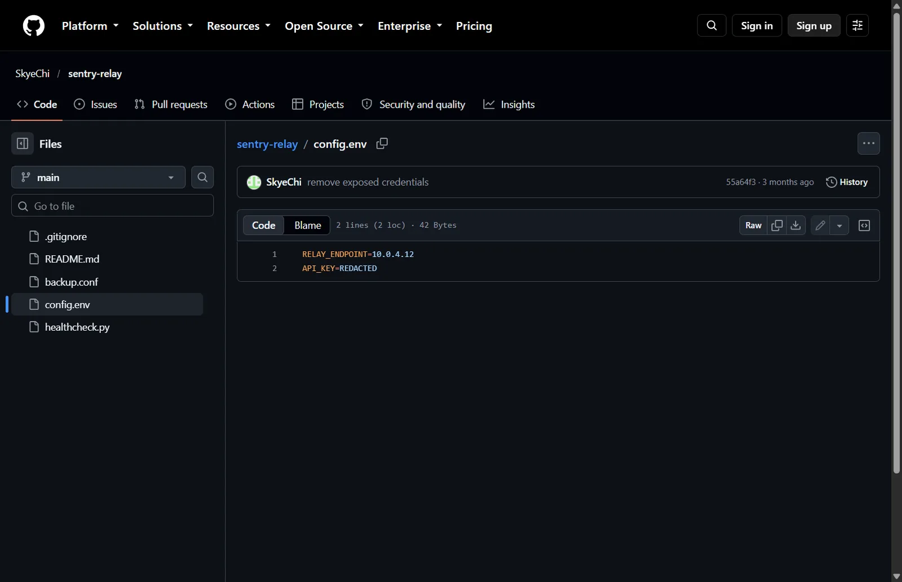
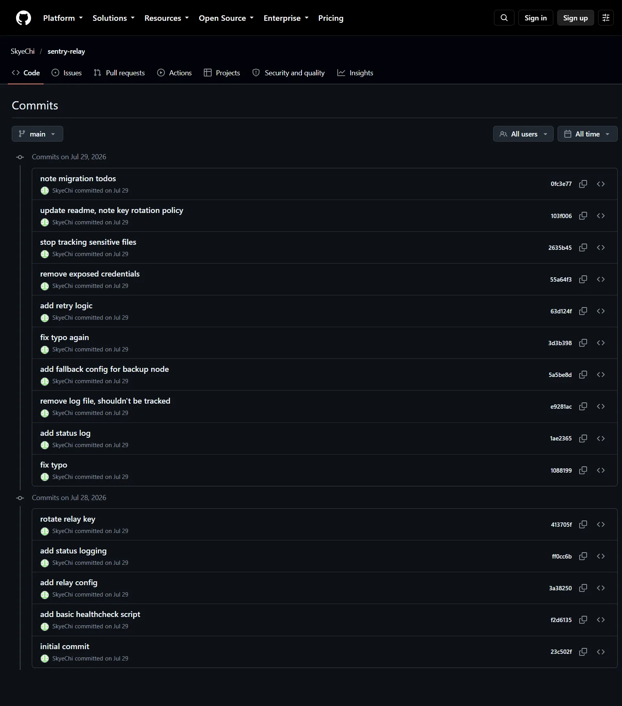
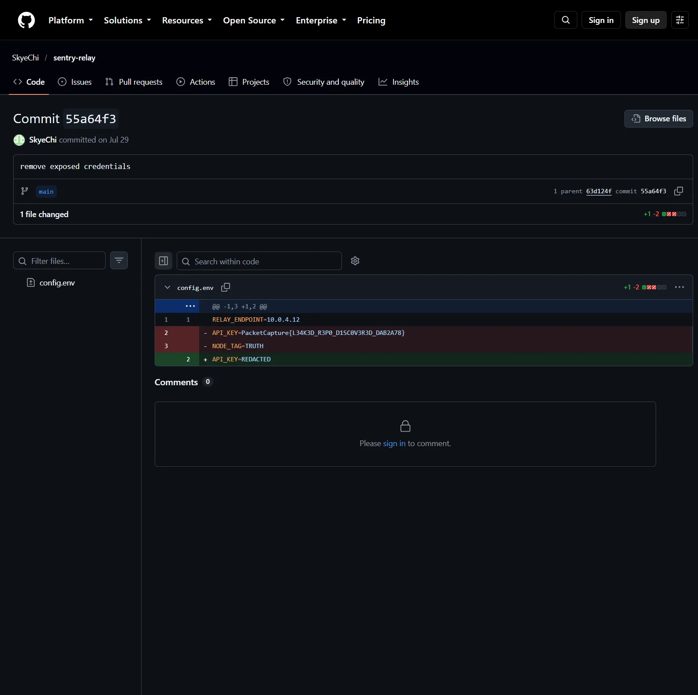

01Start point: the repository github.com/SkyeChi/sentry-relay.
- What I found: the current config.env shows API_KEY=REDACTED.
- Thinking: a file that has clearly been scrubbed tells you a secret used to be there. Git keeps every version of every file, so the question becomes "which older version still has it?"

02Pivot: the commit history.
- What I did: listed all 15 commits and read the messages.
- Result: messages such as "rotate relay key", "remove exposed credentials" and "stop tracking sensitive files".
- Thinking: these messages are the developer admitting a leak. They point straight at the commits worth diffing, which saves reading the whole repo.

03Pivot: the diffs.
- What I did: pulled every commit's patch with gh api and grepped for "PacketCapture{" and "KEY".
- Result: the real key was added in commit 413705f ("rotate relay key") and removed in 55a64f3 ("remove exposed credentials"); the removal diff still shows it in red. Two other flag-shaped values also appear in the history:
- API_KEY=PacketCapture{DECOY_ENDPOINT}
- BACKUP_KEY=PacketCapture{RELAY_BACKUP_KEY}
- API_KEY=PacketCapture{L34K3D_R3P0_D1SC0V3R3D_DAB2A78}
- Thinking: the two decoys are named after config fields rather than telling a story, which is a common way authors plant wrong answers. The real one reads as a sentence ("leaked repo discovered") and ends with a short hash-like suffix, which is how real flags in this CTF look.
